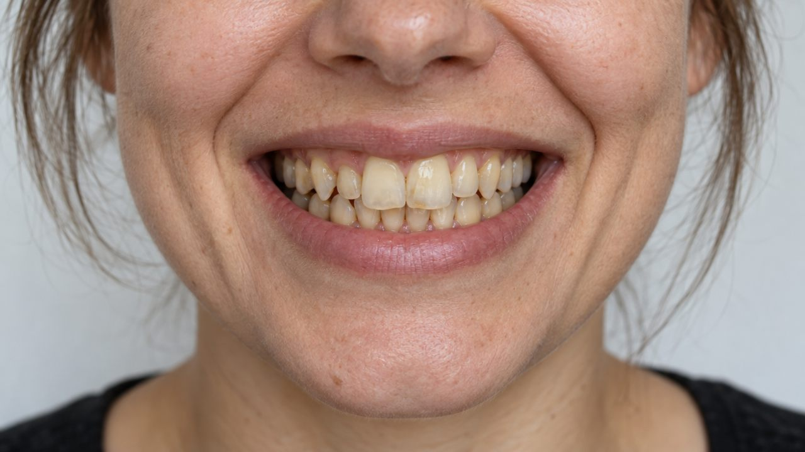
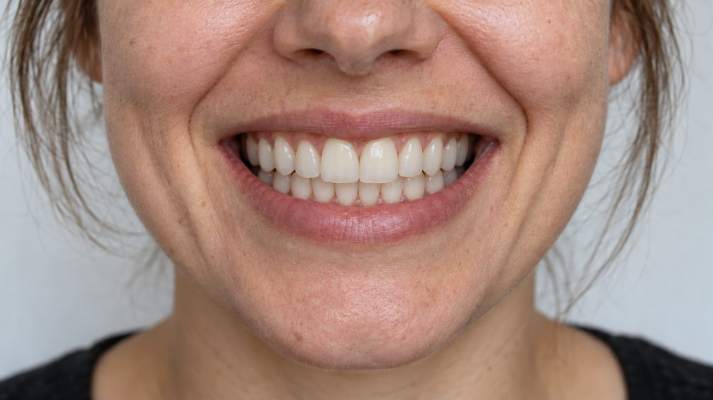
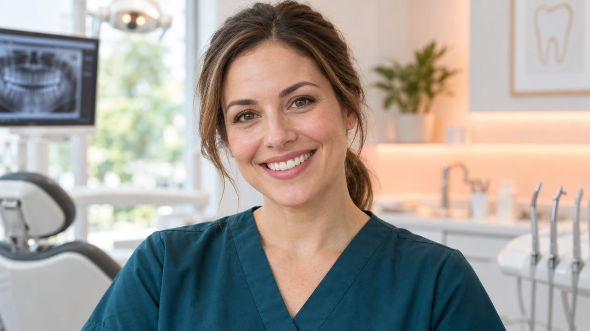
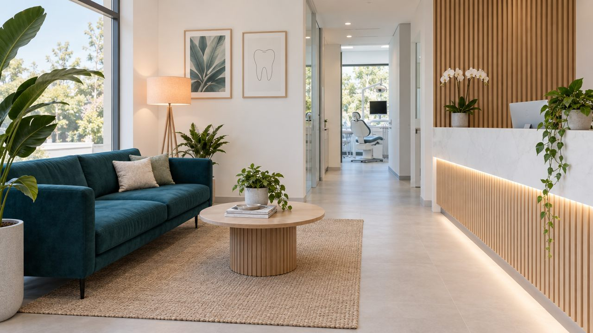

Clínica dental · Ciudad Ejemplo
Sonríe con tranquilidad.
Cuidamos tu sonrisa desde la primera visita, sin prisas y explicándote cada paso antes de empezar.

4.9
1,200 reseñas
+15años cuidando
sonrisas
- Primera consulta sin costo
- Radiografía digital de baja radiación
- Citas el mismo día en urgencias
- Planes de pago sin intereses
- Atención para niños y adultos
Tratamientos
Todo lo que tu sonrisa necesita, bajo el mismo techo
Limpieza y revisión
Una revisión completa cada seis meses para detectar a tiempo cualquier problema.
Ortodoncia invisible
Alineadores transparentes que casi no se notan y se quitan para comer.
Blanqueamiento
Una sonrisa más clara en una sola sesión, con protección para las encías.
Implantes
Recupera un diente perdido con una solución firme y de aspecto natural.
Odontopediatría
Citas cortas y amables para que los niños pierdan el miedo al dentista.
Urgencias
Dolor o golpe: te atendemos el mismo día en horario de clínica.
Resultados reales de pacientes
Mueve el control y mira el cambio
Arrastra la barra hacia la derecha para ver el antes, o hacia la izquierda para ver el después.
Alineación y blanqueamiento. Ortodoncia invisible durante 9 meses y una sesión de blanqueamiento al final.
Imágenes de ejemplo generadas para esta demo.


Tu primera visita
Así de simple es empezar
Hablamos
Nos cuentas qué te preocupa y revisamos tu historial.
Revisamos
Exploración y radiografía digital con muy poca radiación.
Te explicamos
Ves tu caso en pantalla y recibes un plan claro, sin compromiso.
Decides
Empezamos cuando tú quieras, a tu ritmo.

Tu dentista
Dra. Laura Vega
Odontóloga con más de 15 años de experiencia en estética dental y ortodoncia. Cree que ir al dentista no debería dar miedo.
- Especialista en ortodoncia invisible y blanqueamiento
- Te explica cada paso antes de empezar
- Atiende a niños, adultos y personas con ansiedad dental
La clínica
Un lugar donde no se siente que estás en una clínica
Luz natural, música suave y tiempo de sobra. Trabajamos con cita para que nunca esperes de más.

Opiniones
Lo que dicen nuestros pacientes
- ★★★★★
“Llevaba años sin ir al dentista por miedo. Aquí me explicaron todo y no sentí nada.”
Mariana R., paciente desde 2024 - ★★★★★
“Mi hijo salió contento y pidió volver. Eso ya es mucho decir.”
Carlos M., papá de Mateo - ★★★★★
“Me alinearon los dientes con alineadores y casi nadie se dio cuenta. Quedé feliz.”
Andrea P., ortodoncia invisible
Preguntas frecuentes
Lo que más nos preguntan
¿Duele el blanqueamiento?
No debería doler. Algunas personas sienten sensibilidad unas horas después y usamos productos para reducirla.
¿Cuánto dura la ortodoncia invisible?
Entre 6 y 18 meses según cada caso. En la primera consulta te damos un plan con fechas.
¿Atienden a niños pequeños?
Sí. Desde los 3 años, con citas cortas y explicadas con juegos.
¿Tienen planes de pago?
Sí. Puedes pagar tu tratamiento en mensualidades sin intereses con las tarjetas participantes.
¿Qué hago si tengo una urgencia?
Llámanos o escríbenos por WhatsApp. Te atendemos el mismo día dentro del horario de clínica.
Reserva tu cita
Tu primera consulta no tiene costo
Déjanos tus datos y te escribimos para confirmar el horario.
- Lunes a viernes
- 9:00 a 19:00
- Sábados
- 9:00 a 14:00
- Domingos
- Cerrado